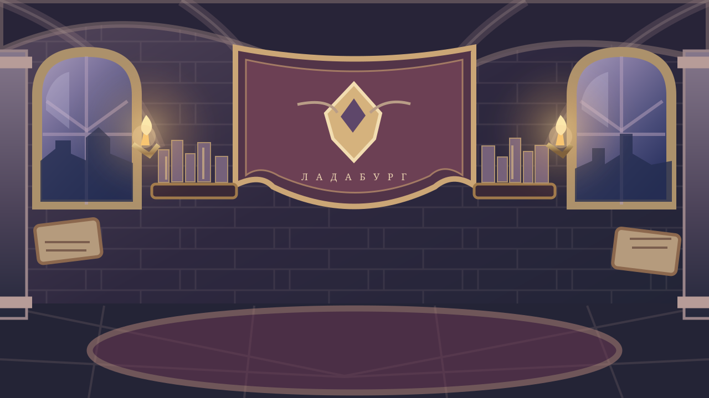
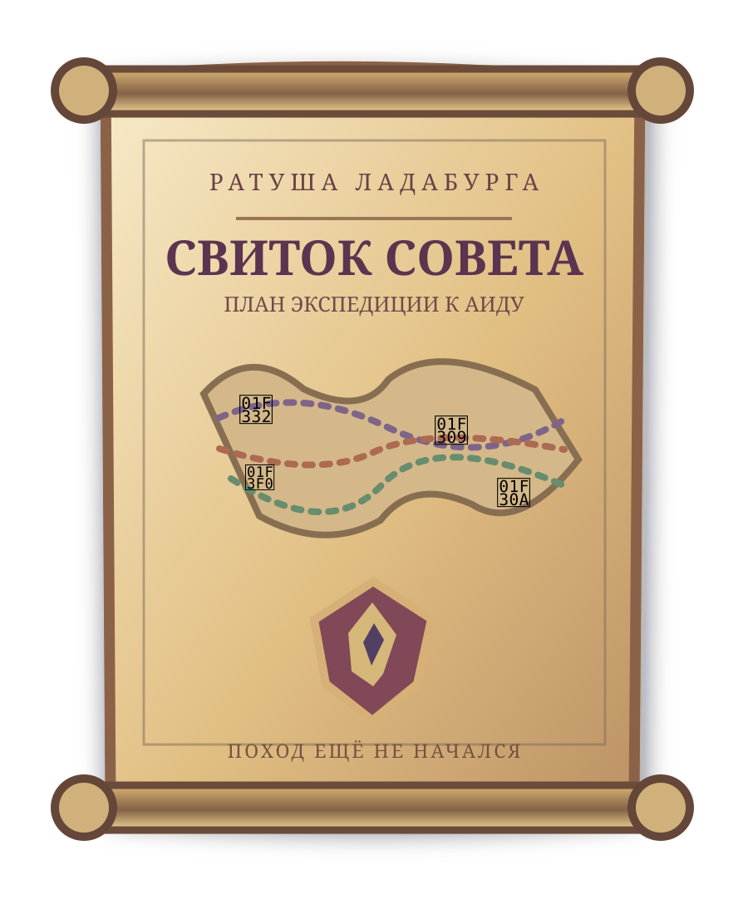

Перед походом — военный совет
Лада, кот, заяц и Умняшка собрались за одним столом. Куда идти, чтобы добраться до царства Аида? Есть три дороги. У каждой — свои плюсы и минусы.
Выслушай друзей, сравни пути, получи новые сведения и реши, кому доверить разведку. Здесь нет единственного правильного пути.
Взвесь три дороги
Рассмотри все три маршрута: нажимай на карту или на карточки. **Плюсы** помогут отряду, **минусы** могут создать трудности. После обсуждения выбери предварительную дорогу.
Изучи все три дороги.
Гонец принёс новое донесение!
Ночью прошёл сильный дождь. Лесные тропы размокли, доски старого моста стали скользкими, а вода в реке поднялась. Но все три дороги по-прежнему доступны.
Разве можно выбирать дорогу, не учитывая новые обстоятельства? Пусть Лада ещё раз сравнит за и против.
Изменится ли твой план?
В каждом маршруте появились новые обстоятельства. Посмотри, что стало лучше, а что хуже. Можно оставить прежнюю дорогу — если объяснишь почему. Можно и передумать.
Выбор может измениться.
Кому доверить разведку?
Все четверо отправятся вместе. Выбери двух друзей, которые подготовят путь впереди отряда. У каждого есть сильная сторона, но и ограничение.
Выбери двух помощников.
Расскажи свой план отряду
✦ Приказ отряда ✦
Объясни друзьям вслух: «Я выбираю эту дорогу, потому что… Но нам нужно остерегаться… Я поручаю друзьям…»

План экспедиции утверждён!
У любой дороги есть риск. Главное, что Лада выслушала друзей, сравнила доводы и смогла объяснить своё решение.
Свиток военного совета добавлен в коллекцию. Путешествие к Аиду пока не начинается — отряд ещё в Ладабурге.